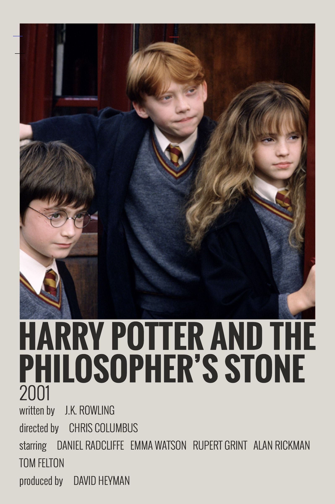
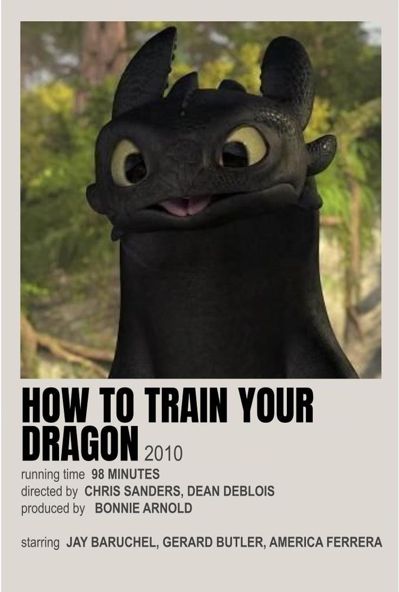
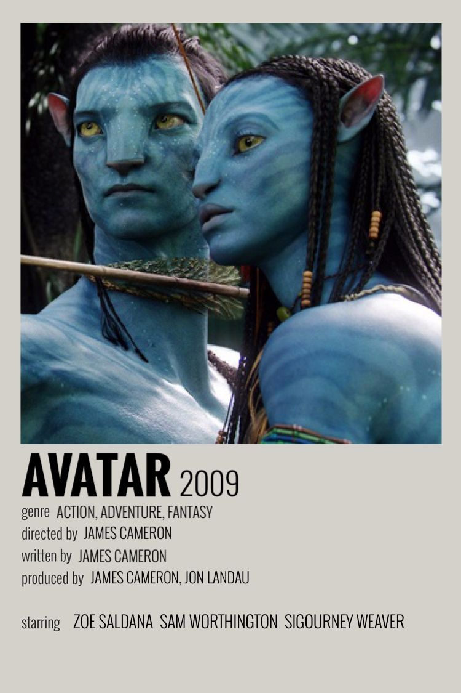
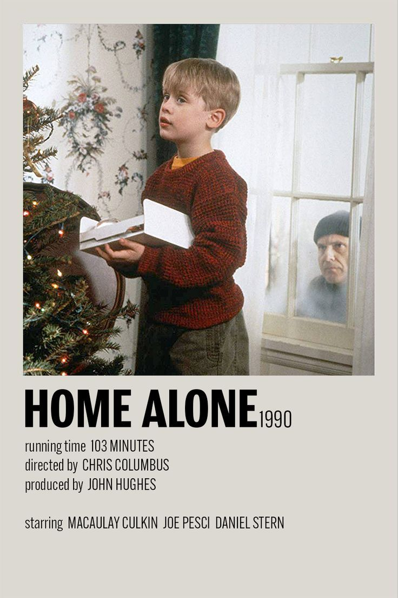

| Harry Potter | HTTYD | Avatar | Home alone |
|---|---|---|---|
| I grew up on the harry potter films, and the first movie for me is the most nostalgic. It's one of my comfort movies which I enjoy watching every christmas day, and at this point I know just about the entire script which I could easily recite whilst watching. | My dad introduced me to this film and it is awesome. I am so glad there's a live action because I prefer them over animated movies, and thankfully the live action is exactly the same! Awesome movie. | This franchise is so amazing, the technology is mind blowing and the concept of na'vi is so amazing to me. It's such a beautiful film and I can't wait for the 4th one. | I had heard about this movie for years, since it is a classic movie, yet for some reason hadn't watched it; this christmas, I finally decided to watch it and it was amazing it was funny and I will definitely be watching it every christmas |